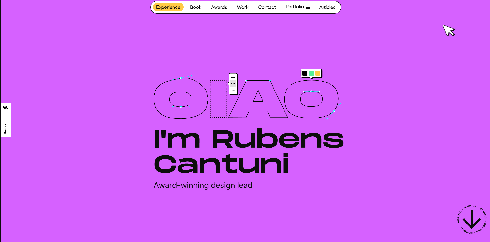
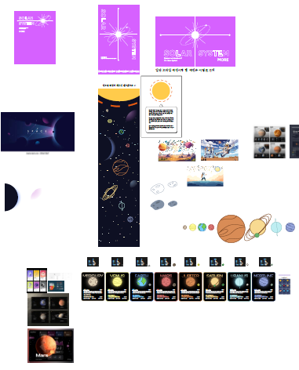
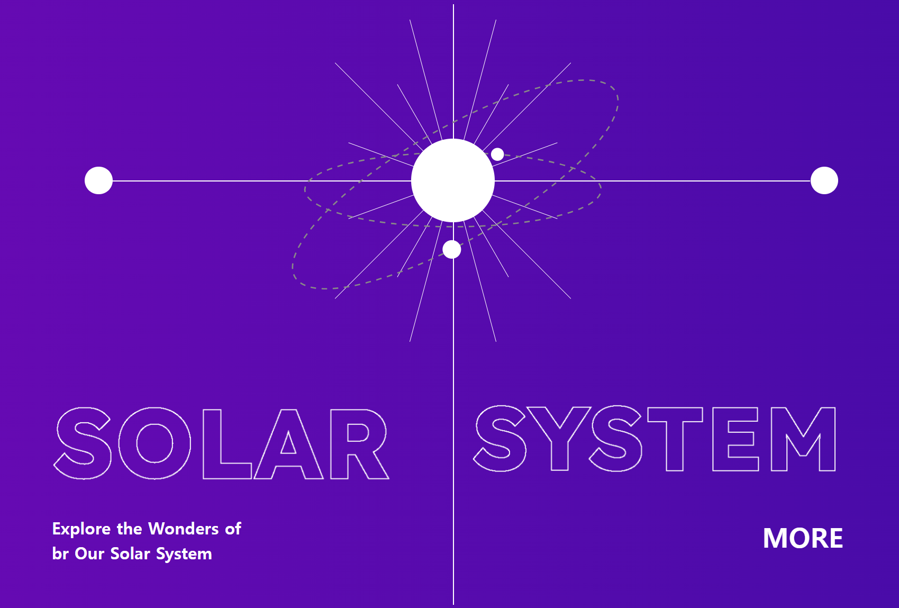
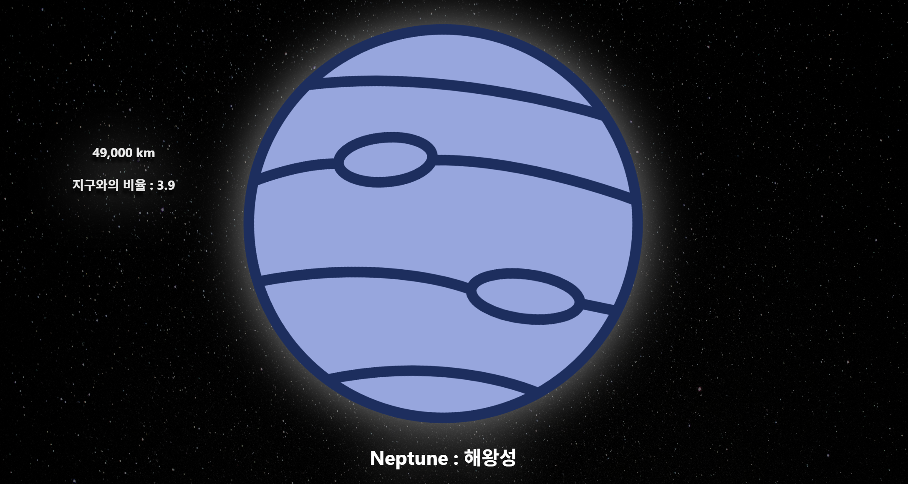

Ten Trillion
Vanila Project
The topic is the solar system.
Team Profile
심우섭
MBTI : INTP
지역 : 전주
역할 : 조장
프로젝트 디자인 시안 제작 및 기획 총괄
적고 싶은 글이 있다면 말해주세요~
이희륜
MBTI : INFP
지역 : 광명
역할 : 팀원
페이지-2, 페이지-3 내부 모달창 제작
적고 싶은 내용이 있다면 말해주세요~
김동규
MBTI : ESTP
지역 : 군산
역할 : 팀원
메인 페이지, 행성 크기 비교 페이지 제작, 팀 소개 페이지 제작,노션 문서 정리
짧지만 밀도 있었던 2주, 아쉬움 없이 Vanila Project에 몰입했습니다.
윤동식
MBTI : ENTJ
지역 : 일산
역할 : 팀원
페이지-3 초안 제작, 페이지-3 모달 내부 모달창 제작

Project subject
멋쟁이사자처럼 부트캠프 프론트엔드 14기 Vanila Project Ten Trillion입니다. 이번 프로젝트의 주제는 SOLER SYSTEM 입니다. 다양한 애니메이션의 구현과 함께 사용자의 몰입도를 끌어들일 수 있는 웹 디자인 개발을 목표로 프로젝트를 진행해보았습니다.
-

참고 사이트
처음 참고시안으로 사용하기 위해 선택했던 웹 사이트입니다. GSAP의 다양한 기능들이 적용되어 애니메이션 디자인을 참고하기 좋은 사이트라는 생각에 참고를 하게 되었습니다. 각 기능들을 분석하고 시안을 제작하여, 프로젝트에 접목하였습니다. -

시안 제작
태양계와 우주를 테마로 한 콘텐츠의 시각적 흐름을 기획하고, 홈 화면, 개별 행성 정보, 모바일 앱 등 다양한 상황을 고려한 시안을 제작하였습니다. -

메인 페이지
테양게를 태마로 한 메인 화면 구성은 사용자 접근성과 몰입감을 동시에 고려하여 기획되었습니다. 모바일과 데스크탑에서 모두 자연스럽게 작동하는 반응형 UI를 구성하고, GSAP 애니메이션을 활용해 행성 궤도 움직임을 시각적으로 표현하여 우주 콘셉트에 생동감을 더했습니다. 전체 컬러 시스템과 UI 구성 요소, 인터렉션 흐름을 일관되게 설계함으로써 프로젝트의 방향성과 분위기를 효과적으로 제시합니다. -

행성 크기 비교 페이지 사용자가 행성의 상대적인 크기를 시각적으로 이해할 수 있도록, 크기 순서에 따라 수평으로 스크롤 되는 구조를 설계하였습니다. GSAP의 ScrollTrigger 기능을 활용하여 스크롤에 따라 화면의 시점이 점점 축소되며 등장하도록 애니메이션을 적용하였고, 이를 통해 단순 나열이 아닌 체감 중심의 비교 경험을 제공합니다.
Division of team roles
“어떤 고민을 했고, 어떻게 풀어냈을까?”
각자의 시선으로 바라본 프로젝트 이야기를 들어보세요.